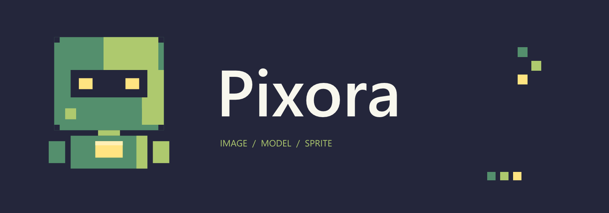

Tracefolio REPORTS & ISSUES
Tracefolio REPORTS & ISSUES로봇의 네 가지 색상으로 로고 교체
구현·실행 검증·프로젝트 푸시 완료Affinity에서 로봇 심볼과 배너를 제작하고 README·Unity 창에 동일하게 적용했습니다.
작업 결과
초록·연두·노랑·남색 로봇 로고를 제작하고 README와 Unity 창에 적용했습니다. 편집 가능한 Affinity 원본과 PNG를 함께 저장했으며 프로젝트 main에 푸시했습니다.

변경 내용
기존 보라색 P 심볼을 사용자 제공 로봇의 사각 머리·눈·가슴 패널에서 가져온 로봇으로 교체했습니다. 초록 #548F6D, 연두 #AEC96E, 노랑 #FFE481, 남색 #24263B를 모두 사용했습니다. 이전 원본은 보존했습니다.
- Affinity 원본: Design/Brand/Robot의 심볼·배너 .af 파일.
- 심볼 512×512, 배너 1600×560 PNG를 Unity 에디터와 README에서 공유합니다.
- 프로젝트 변경
- 설정 창 후속 수정
검증
| 대상 | 실행 결과 | 근거 |
|---|---|---|
| 실제 Affinity | 3.3.1.4940 연결·문서 생성·저장·출력 확인 | .af와 PNG 실파일 |
| PNG | 크기·바이트·네 색상·배포 복사본 해시 확인 | 검증 자료 |
| Unity | 6000.0.83f1의 창 로고 표시 확인 | 설정 창 후속 보고서 화면 |
| 문서 | 10개 장·5개 로컬 이미지 검사 통과 | 검증 자료 |
남은 사항
다른 OS와 디스플레이 배율에서의 출력은 미확인입니다. Affinity의 로컬 MCP만 사용했으며 추가 파일·네트워크 MCP 권한은 켜지 않았습니다.
작업 시간
- 제안 시간: 15~25분. 진행 중 설정 창 재작업이 추가되었습니다.
- 실제로 완료된 시간: 구현·Unity 검증·프로젝트 푸시는 2026-10-29 21:30 KST에 완료했습니다. 보고서 작성 시점 2026-10-29T21:30:56+09:00, 시작부터 23분 27초입니다. 아카이브 배포는 후속 Actions로 확인합니다.
- XERJ: 실패 — 노드 중지 오류를 확인하여 rg와 실제 소스로 대체했습니다.